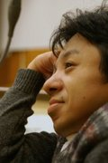

ただいま、ホームページ作成中です。
しばらく、お待ちください。
ブログ 〜希望の空へ〜 → 旧ブログ こちら 新ブログ こちら
＜Be Smile Present's主催 過去のイベント＞
2008/11/8
過去から未来へ 〜変わりたいあなたへの贈りもの〜
2009.3.14
命の輝きを見つめて 〜Present only for you〜
-笑顔いっぱいの世界のために−
＜頂いたご感想＞
2010/3/7
日野原希美Ｌｉｖｅ 〜ランドの近くで大感謝祭〜
＜Be Smile Present's主催 今後の予定＞
体調不良により、しばらくお休みさせて頂いております。
体調が治り次第、イベントなど告知させて頂きますので、よろしくお願い致します。
それまで、ブログ「希望の空へ」を購読して頂けるとありがたいです。
| ご縁のある皆様に笑顔という贈り物を届け、その笑顔を紡ぐことで、感謝と希望の環を広げていきたいと願い、２００８年１１月『Be Smile Present's』を設立しました。明日への一歩目を踏み出したいと願う皆さまが、自分という存在価値をちゃんと認められるようなお手伝いをしていくため、その笑顔と共に講演会やワークショップなどのイベントやキャンペーンを企画、プロデュースしていきたいと思います。 |
| ＜主宰者プロフィール＞ | |
|  | 武市にぽぽ １９７２年１０月、東京の下町の小さな病院で「骨形成不全症」という骨の病気と共に、この世に生まれる。幼い頃から差別や偏見、そして病そのものの苦しみを感じていたが、様々な人との出会いや経験などから”命”への希望を得て、今日まで病と共に生き続ける。 現在は、電機機器メーカーで技術職として働く傍ら、様々なＮＧＯにてボランティアに参加。 近年、一人一人が自分が生まれてきた役割に気づき、世界中の人々と共に歩むことが出来る世の中になることを願い、ブログ「希望の空へ」の随筆活動や講演活動などを始める。 講演は、３０分程度から２時間程度まで可能です。出来れば、プロジェクターなどがあればいいですが、場所など、特に問いません。講演料なども問いません。 ・Be Smile Present's 代表 ・チーム『宇宙の約束』 副代表 → ホームページ ・アミウィングス 設立／運営メンバー → ホームページ |
| イベントの運営、プロデュース、講演依頼などを受け付けています。 お問い合わせは、こちらまで → info@be-smile-presents.net |
|